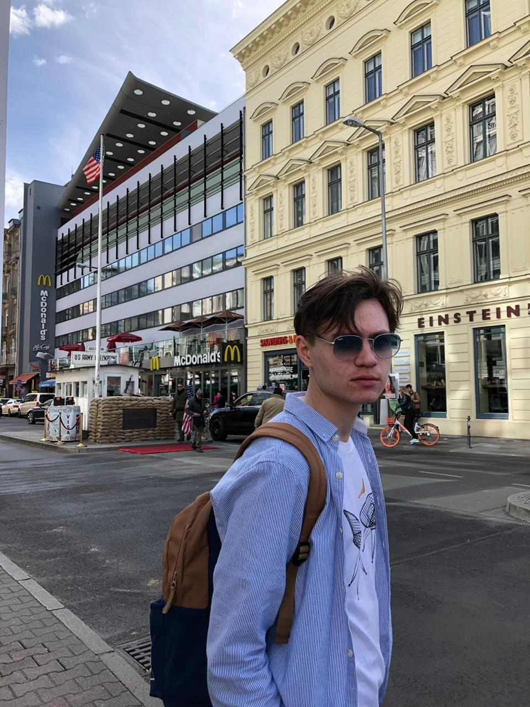

Найдите самые свежие статьи на любую тему
и сохраняйте в своем личном кабинете.
Идет поиск новостей...
Ничего не найдено
К сожалению по вашему запросу ничего не найдено.
Результаты поиска

Об авторе
Всем привет! Меня зовут Исмагилов Тимур, я закончил Яндекс.Практикум, а это мой
дипломный проект. Теперь я создаю крутые сайты, и это пример одного из них.
Если хотите предложить мне работу - ссылки внизу страницы!